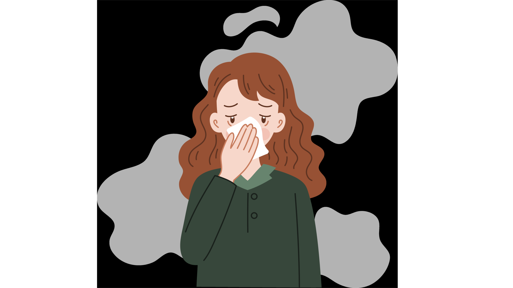

Água Limpa, Futuro Saudável:
O Saneamento Básico que BH Merece.
Juntos, podemos construir um futuro mais digno e saudável para todos.
Saiba Mais

Situação Atual do Saneamento Básico
em Belo Horizonte
Belo Horizonte apresenta um cenário de saneamento básico com avanços significativos, mas ainda com desafios a serem superados. Atualmente, a cidade possui:
Cobertura de 93,98% da população com serviços de esgotamento sanitário, acima da média nacional (66,95%) e estadual (77,9%).
Índice de coleta e tratamento de esgoto de 90,47%, com 5,3% do esgoto coletado sem tratamento e 4,23% sem coleta e tratamento.
Cobertura de 99,02% da população com abastecimento de água.